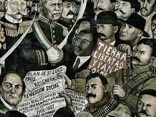
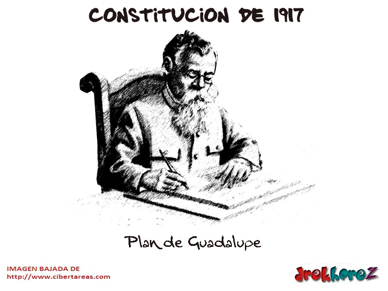
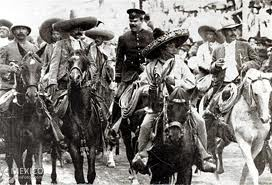

Revolución mexicana
Introducción:
La revolución mexicana estallo como resultado de varios factores, la crisis generalizadadel gobierno de Porfirio Díaz quien a principios del siglo XX tuvo un gobierno que se distinguió por el perfeccionamiento de la mecánica política y por el notable crecimiento de la economía estetambién se beneficio de los códigos minero y comercial.
En esta época desaparecieron las contiendas electorales, la independencia de los poderes legislativo y judicial, las críticas en los grandesperiódicos, sobre todo desaparecieron las oposiciones armadas.
La crisis en el sistema político se debió en parte al envejecimiento de Díaz cuando esto tomo importancia Porfirio Díaz rompió su imparcialidadcon sus equipos y eligió como su sucesor a un miembro del grupo “científico” Ramón Corral quien había sido gobernador de sonora de donde era Porfirio Díaz dicha decisión obligo a reducir lafuerza política del grupo reyista por lo que pasaron a ser opositores para colmo peligrosos por su experiencia, capacidad y prestigio, el reyismo paso a una inestabilidad.

Movimiento de los hermanos Serdan
Inicio de la revolucion mexicana
Los libros de historia nacional cuenta que la Revolución Mexicana inició el 20 de noviembre de 1910, pero la historia oficial inicia en Puebla, dos días antes, con los hermanos Serdán: los primeros mártires del movimiento. Fueron ellos quienes bajo los ideales de libertad y democracia, lucharon antes que nadie por un cambio en la sociedad mexicana.
El 18 de noviembre, con armas en mano, después de haber sido alertado del posible cateo, Aquiles Serdán reunió a sus compañeros ya preparados para iniciar la Revolución Mexicana. Fue ahí, en un pequeño lapso de horas, cuando los hermanos Serdán brillaron en la historia. Máximo Serdán, hermano menor, fue de los primeros revolucionarios que lucharon en una notoria desventaja contra los casi mil soldados que el gobernador envió para terminar con los rebeldes.

La lucha fue la primer batalla revolucionaria en la que Aquiles Serdán se levantó como el primer mártir de la Revolución. Serdán murió horas después de que el enfrentamiento terminara, cuando todos sus compañeros habían perecido y él logró refugiarse en un hueco en el que escondía armas; allí, a las dos de la mañana, con la casa llena de soldados buscando el cuerpo del autor intelectual del conflicto armado, un ataque de tos delató a Aquiles; fue herido de muerte y, además, recibió el tiro de gracia. Su cuerpo fue exhibido públicamente para alejar de toda idea revolucionaria a quien viera el cuerpo de uno de los primeros antirreeleccionistas.
Revolución mexicana
Emiliano Zapata
Biografia
Emiliano Zapata nació en Morelos el 8 de agosto de 1879. Fue hijo de Gabriel Zapata y Cleofás Salazar. Desde niño fue labrador y arriero. Siempre defendió a los campesinos que sufrían abusos de los hacendados.
El 11 de marzo de 1911, se sublevó contra la dictadura de Porfirio Díaz, apoyando a Francisco Madero. El 25 de mayo lanzó el Plan de Ayala donde exigió distribuir las haciendas a los campesinos. En 1914, se alió a Pancho Villa y tomó Ciudad de México. Pero las tropas de Venustiano Carranza lo obligaron a regresar a Morelos, donde instaló un gobierno agrarista. Se mantuvo rebelde, hasta que fue embozcado y murió a balazos el 10 de abril de 1919.
Revolución mexicana
Francisco Villa
Su verdadero nombre fue Doroteo Arango Arámbula y cuando combatió en la Revolución Mexicana fue apodado como "Centauro del Norte". Nació el 5 de junio de 1876, en Durango (México). Sus padres fueron Agustín Arango y Micaela Arámbula. De niño se ganó la vida en diversos oficios. De joven se involucró en bandas que robaban ganado y fue perseguido.
En 1910, ya era líder de una partida de bandoleros, con los cuales se unió al movimiento de Francisco Madero para derrocar a Porfirio Díaz. En 1913 se unió a Venustiano Carranza para combatir a Victoriano Huerta. En 1914, rompió con Carranza, y se unió a Emiliano Zapata, pero algunas derrotas lo obligaron a refugiarse en Chihuahua. Desde 1916 fue atacado por las fuerzas de EE.UU. y las de México.
En 1920, firmó la paz con el presidente Adolfo de la Huerta, y se retiró a Durango. Sin embargo, los terratenientes mandaron asesinarlo. Murió abaleado el 20 de julio de 1923 en Hidalgo del Parral (norte de México).
Revolución mexicana
Francisco .I. Madero
Francisco Ignacio Madero González nació el 30 de octubre de 1873, en Coahuila (México). Sus padres fueron el Francisco Madero Hernández y Mercedes González Treviño. Estudió agricultura en Estados Unidos y administración en Francia.
Desde 1905 fue opositor a la dictadura de Porfirio Díaz. En 1909 fundó el Partido Nacional Antirreeleccionista y lanzó su candidatura presidencial. En 1910, Porfirio Díaz lo mandó encarcelar, pero Madero logró escapar y lanzó el Plan de San Luis iniciando una "rebelión nacional". Poco después Porfirio Díaz renunció y huyó a Europa.
Francisco Madero tomó el poder y gobernó hasta febrero de 1913. En este periodo implantó el sufragio popular y prohibió la reelección presidencial. Pero los campesinos exigían reformas económicas, y se sublevaron con Emiliano Zapata y Pancho Villa. Mientras tanto los hacendados apoyaron a Victoriano Huerta, quien le dio un golpe de estado y ordenó su asesinato. Murió a balazos el 22 de febrero de 1913, en Ciudad de México.
Revolución mexicana
Porfirio Díaz
Porfirio Díaz Mori nació el 15 de setiembre de 1830, en Oaxaca, México. Sus padres fueron José Faustino Díaz y Petrona Mori. Estudió Leyes, pero se dedicó a la vida militar. Participó en la Guerra de la Reforma (1858-1860) y luchó contra la invasión francesa (1861-1867), contribuyendo a la victoria del presidente Benito Juárez.
En 1867 y 1871 fue candidato presidencial, pero en ambas ocasiones fue derrotado por Benito Juárez. Llegó a poder en 1877 y gobernó hasta 1880. De 1884 a 1911 gobernó dictatorialmente haciéndose reelegir sucesivamente. Favoreció la llegada de capitales extranjeros en la minería y la industria. Mientras tanto, la mayoría de mexicanos vivía en pobreza.
En 1910 se reeligió después de encarcelar al candidato opositor Francisco Madero, quien al salir de prisión dio inicio a la Revolución Mexicana. El 25 de mayo de 1911 renunció y se exilió en París, donde murió el 2 de julio de 1915.
Revolución mexicana
Causas que originarón el movimiento
Causas de orden político.
El envejecimiento del sistema, manifestado en la prolongada permanencia de Díaz en el poder, así como en la inmovilidad del gabinete porfirista ( el ministro más joven tenía 60 años de edad y por lo menos, 20 años en el puesto ) de la misma forma los diputados y senadores , gobernadores y demás puestos administrativos de distintos niveles, fueron ocupados por elementos fieles al régimen, limitando los espacios requeridos, para su consolidación como clase social, por la cada vez más numerosa clase media.
Causas Sociales.
El descontento de los campesinos causado por el despojo de tierras, que de manera sistemática se venía dando desde 1883, en que se empezó a aplicarse la ley de deslinde y colonización de tierras baldías, y aunque su aplicación fue suspendida en 1808, sus efectos resultaron catastróficos para la mayoría de los poseedores de tierras que no pudieron comprobar por medio de títulos, la legítima posesión de sus terrenos, que perdieron a manos de las compañías deslindadoras, incrementándose el latifundismo iniciado desde los tiempos de la reforma liberal.
Causas económicas.
Inconformidad de los pequeños empresarios dedicados a labores comerciales, agrícolas e industriales, inconformes con el manejo que la oligarquía de los científicos, hacía de los créditos bancarios, pues en muchas ocasiones los destinaba a financiar sus propios proyectos.
Revolución mexicana
Constitucion de 1917
El 5 de febrero de 1917 fue promulgada la Constitución Política de los Estados Unidos Mexicanos, por el presidente constitucionalista Venustiano Carranza, como producto de los movimientos revolucionarios de 1910.Este documento continúa vigente, aunque a lo largo de la historia ha sido reformada en más de 200 ocasiones.
El camino que se siguió desde las primeras críticas a la antigua Constitución vigente, la de 1857, hasta su entrada en vigor el 1 de mayo de 1917, no fue en modo alguno en un contexto de paz y armonía sino todo lo contrario: se originó a partir de la nueva realidad social que vivía México tras el inicio de la Revolución Mexicana, realidad que necesitaba una nueva Constitución Política que se ajustara a ella y garantizará los derechos de todos los mexicanos.

La Constitución de 1917 fue la primera en la historia en incluir los derechos sociales, marcando de esta forma un antecedente para el resto del mundo, lo que le otorgó el reconocimiento de “la primer Constitución social del Siglo XX”.
Los antecedentes de esta Constitución están en el Acta Constitutiva de la Federación, la Constitución de los Estados Unidos Mexicanos de 1824, las Siete Leyes Constitucionales de 1836, las Bases Orgánicas de la República Mexicana de 1843, el Acta Constitutiva y de Reformas de 1847 y la Constitución Federal de los Estados Unidos Mexicanos de 1857.
Revolución mexicana
Culminacion de la revolucion mexicana
la culminación de la revolución armada con la Constitución Política de los Estados Unidos Mexicanos de 1917, reconocida por haber sido una constitución liberal social y la primera de su tipo en el mundo que aún rige al México de hoy. La Constitución garantizó reformas y derechos liberales (civiles y políticas) y sociales (reforma agraria y legislación laboral progresista).

El ideal de la revolución era crear una ciudadanía moderna con derechos y alfabetismo. La Constitución de 1917 fue, quizás, el logro más alto de esta Revolución
Revolución mexicana
Video
Resumen de la revolucion mexicana
Video
Revolución mexicana